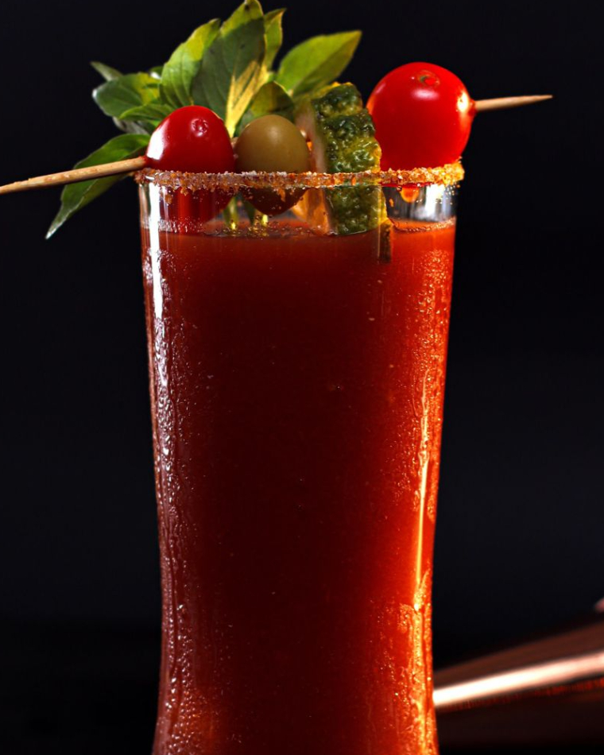

Bloody Mary

Ingredientes:
45 ml de vodka
90 ml de suco de tomate
15 ml de suco de limão fresco
2-3 dashes de molho inglês (Worcestershire sauce)
2-3 dashes de molho de pimenta Tabasco (ou a gosto)
Sal e pimenta a gosto
Gelo
Fatia de limão para decorar
Talo de aipo para decorar (opcional)
Modo de preparo:
Encha um copo alto com gelo.
Adicione a vodka, o suco de tomate, o suco de limão, o molho inglês e o molho de pimenta Tabasco no copo.
Tempere com sal e pimenta a gosto.
Mexa bem todos os ingredientes com uma colher longa.
Decore o copo com uma fatia de limão e, se desejar, um talo de aipo.
Sirva imediatamente e aproveite seu Bloody Mary!
O Bloody Mary é um coquetel versátil, e você pode personalizá-lo adicionando ingredientes como molho de alho, molho de pimenta
chipotle, suco de aipo ou até mesmo adicionando uma pitada de tempero de sua escolha. Aprecie seu Bloody Mary!